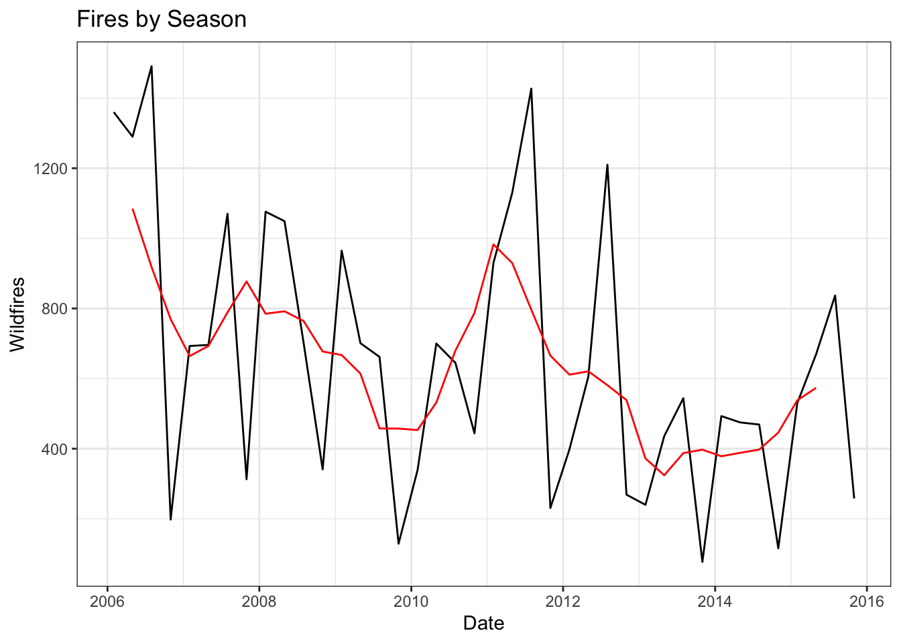
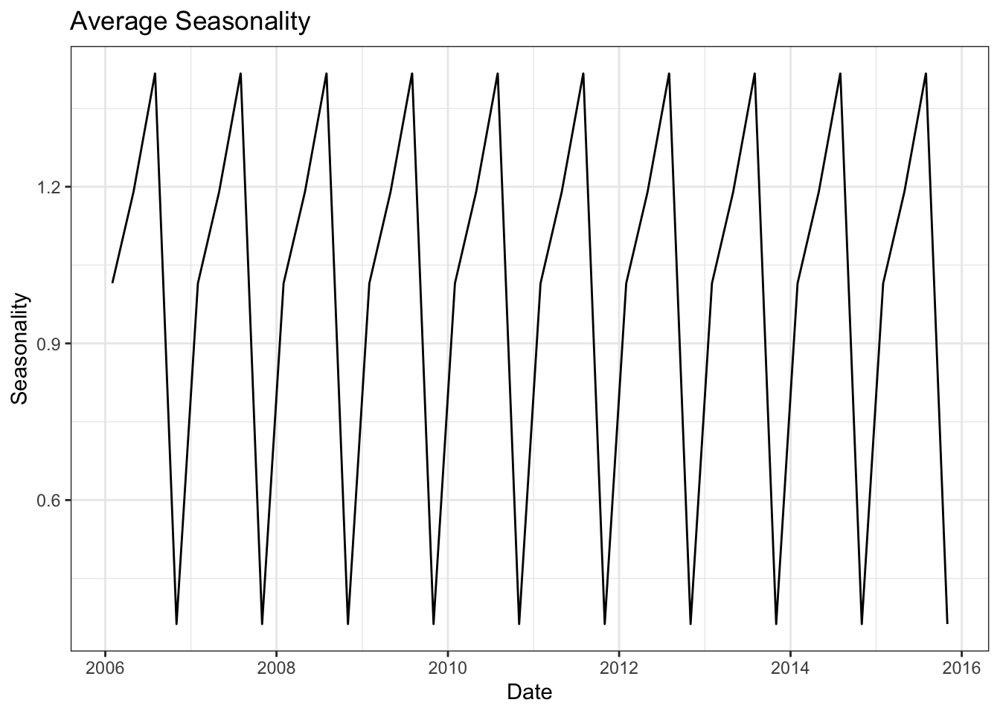

Wildfire Time Series Decomposition
Will Godwin
10/21/2019
Introduction
Time series data consist of a metric that’s measured over regular intervals. Within the wild fires dataset, we can create a time series by aggregating a metric, like number of wildfires burning >100 acres, across a prudent time interval. The purpose of this post is to decompose our time series of wildfire counts and identify its constituent patterns in an effort to understand the underlying data-generating process. The 3 main patterns we’ll examine, and standard in time series analysis, is trend-cycle patterns, seasonal patterns, and the remainder component (anything not contained in first two components). Detailed explanations of these components are beyond the scope of this post but can be found here. Detecting the strength to which each of these components influence our data can be useful from a policy perspective. For example, if we found a strong seasonal trend in wildfire counts (very likely!), fire-fighting agencies could make sure to prioritize resources within those high fire seasons and deprioritize otherwise.
Here, I decompose a time series of wild fire counts into 3 parts: overall trend component, seasonal component, and a remainder component (hereafter “random noise”). I predict to see an overall trend of increasing wildfires from 2006-2015. Additionally, I expect to see a strong seasonal pattern (intially substantiated in my previous post), with the majority of wildfires starting in summer months.
Deciding on aggregation metric
First, to create a metric with regular intervals, we’ll need to decide on the time window for aggregation (by day, week, month, season, year?). This decision will be made by visual assessment of observed trend. I’ve loaded and processed the wildfire data as I’ve done in previous posts and viewable on my github if interested. Below I plot out the trend after aggregating by day, week, month, season, and year.
#####################################################################
#aggregate to daily
#####################################################################
fires %>%
filter(FIRE_SIZE>=100) %>%
mutate(startDate=as.Date(paste0(FIRE_YEAR, "-", DISCOVERY_DOY),
format="%Y-%j")) %>% #make date variable
group_by(startDate) %>%
count() %>%
filter(!is.na(startDate)) %>% #some fires missing dates for some reason
complete(startDate=seq.Date(min(startDate), max(startDate), by="day")) %>%
ggplot(aes(startDate, n)) +
geom_point() +
geom_line() +
ggtitle("Aggregate by Day") +
theme_bw() +
xlab("Date") +
ylab("Wildfires")
#####################################################################
#aggregate to weekly
#####################################################################
fires %>%
filter(FIRE_SIZE>=100) %>%
mutate(startDate=as.Date(paste0(FIRE_YEAR, "-", DISCOVERY_DOY),
format="%Y-%j"), #make date variable
week_var=as.Date(paste0(FIRE_YEAR, "-", week(startDate), "-", 1),
format="%Y-%U-%u")) %>%
group_by(week_var) %>%
count() %>%
filter(!is.na(week_var)) %>% #some fires missing dates for some reason
complete(week_var=seq.Date(min(week_var), max(week_var), by="week")) %>%
ggplot(aes(week_var, n)) +
geom_point() +
geom_line() +
ggtitle("Aggregate by Week") +
theme_bw() +
xlab("Date") +
ylab("Wildfires")
#####################################################################
#aggregate to monthly
#####################################################################
fires_month <- fires %>%
filter(FIRE_SIZE>=100 & !is.na(DISCOVERY_DOY)) %>%
mutate(fires=1,
startDate=as.Date(paste0(FIRE_YEAR, "-", DISCOVERY_DOY),
format="%Y-%j"), #make date variable
month_var=as.Date(paste0(FIRE_YEAR, "-", month(startDate),"-01"),
"%Y-%m-%d")) %>% #make month variable
group_by(month_var, FIRE_YEAR) %>%
count() %>%
complete(month_var=seq.Date(min(month_var), max(month_var),
by="month")) %>%
mutate(month_name=month(month_var, label = T))
ggplot(fires_month, aes(month_var, n)) +
geom_point() +
geom_line() +
ggtitle("Aggregate by Month") +
theme_bw() +
xlab("Date") +
ylab("Wildfires")
#####################################################################
#aggregate to season (winter, summer, etc)
#####################################################################
fires_season <- fires_month %>%
mutate(month=month(month_var),
season=case_when(
month %in% c(1,2,3) ~ "Winter",
month %in% c(4,5,6) ~ "Spring",
month %in% c(7,8,9) ~ "Summer",
month %in% c(10,11,12) ~ "Fall")
) %>%
group_by(season, FIRE_YEAR) %>%
summarise(n_fires=sum(n), date=mean(month_var)) %>%
arrange(date)
ggplot(fires_season, aes(date, n_fires)) +
geom_point() +
geom_line() +
ggtitle("Aggregate by Season") +
theme_bw() +
xlab("Date") +
ylab("Wildfires")
#####################################################################
#aggregate to yearly
#####################################################################
fires %>%
filter(FIRE_SIZE>=100) %>%
group_by(FIRE_YEAR) %>%
count() %>%
ggplot(aes(FIRE_YEAR, n)) +
geom_point() +
geom_line() +
ggtitle("Aggregate by Year") +
theme_bw() +
xlab("Date") +
ylab("Wildfires")
The daily plot, largely dominated by zeros and a few spikes, is such a cloud of points that we probably couldn’t easily decompose it. The weekly and monthly plots are slightly more comprehensible but also displays so much apparent noise and stochasticity that we’ll probably gain little signal from it. With the seasonal and yearly plots, individual points start to come into focus and we’re able to get a sense of what the data may be doing. When working with temporally granular data that requires aggregation, it is often important to test out multiple methods of aggregation to test the robustness of your primary findings. In this instance, aggregating by season is the most justified visually (shown below) and theoretically since one would expect most wildfires to begin in summer months.
Decomposition
Now that I’ve decided on a metric for the time series, I’ll decompose the time series to identify underlying patterns. Time series can be decomposed in either an additive or multiplicative manner, depending on the theorized data-generating process. In this case, an additive decomposition would indicate that we don’t think there’s any interaction between the overall trend and seasonality. A multiplicative decomposition signals the opposite, there might be a trend-seasonality relationship. Since there is recent evidence of increased wildfires year-round, I’d predict that as overall trend increases, seasonality decreases and will conduct multiplicative decomposition.
I’ll start by investigating the overall trend in the data. While there are plethora of packages available to decompose and visualize time series data, for this post I’ll decompose the temporal patterns by hand using this article as a guide .
Overall trend
A common, simple method to detect the overall trend is to use a moving average. I first implement a lag of 4 seasons (or 12 months) since the seasonal peaks appear to occur yearly (every summer).
#decompose overall trend using rolling average (rollmean function)
fires_season$fire_trend <- rollmean(fires_season$n_fires, k=4, fill = "NA")
#ggplot-w overall trend added
ggplot(fires_season, aes(date, n_fires)) +
geom_line() +
geom_line(aes(y=fire_trend), color="red") +
ggtitle("Fires by Season") +
xlab("Date") +
ylab("Wildfires") +
theme_bw()
The black line with points represent the total wildfires by season as observed in the data, while the red line shows the overall trend within the data. Overall, there appears to be little relationship between number of wildfires and time. If anything, the number of wildfires appears to be decreasing over time, especially when excluding a particularly high spike in 2011.
Seasonality
#detrend the time series
fires_season <- fires_season %>%
mutate(fire_detrend=n_fires/fire_trend)
#calculate average seasonality
fires_season <- fires_season %>%
group_by(season) %>%
mutate(fire_seasonality=mean(fire_detrend, na.rm = T))
#ggplot
ggplot(fires_season, aes(date, fire_seasonality)) +
geom_line() +
ggtitle("Average Seasonality") +
xlab("Date") +
ylab("Seasonality") +
theme_bw()
Since the overall trend was faily meager, observing strong seasonality is to be expected and is indeed observed. The plot above shows the average seasonality (mean of the de-trended data), repeated over the entire time series. The peaks represent summer months while the troughs represent winter months.
Random Noise
#calculate random noise
fires_season <- fires_season %>%
mutate(fire_random = n_fires/(fire_trend*fire_seasonality))
#ggplot random noise
ggplot(fires_season, aes(date, fire_random)) +
geom_line() +
ggtitle("Random noise") +
xlab("Date") +
ylab("Noise") +
theme_bw()
The remaining variation observed in the time series not attributed to trend or seasonality can be called random noise. When visualizing the random noise plot, we may be able to see other patterns within the time series that the initial components cannot capture. In this case, the variation in random noise appears to be distributed fairly consistently over time, indicating little remaining pattern to the time series.
Reconstruct the observed data
#reconstruct trend and plot
fires_season %>%
mutate(fire_reconstruct = fire_trend * fire_seasonality * fire_random) %>%
ggplot(aes(date, fire_reconstruct)) +
geom_line() +
geom_line(aes(date, n_fires), color="red") +
xlab("Date") +
ylab("Wildfires") +
theme_bw()
To validate the decomposition, we can reconstruct the trend by multiplying together the component trends. The reconstructed trend line is plotted but not visible because the original trend (in red) lies exactly on top of it.
Conclusion
#plot each individually
p0 <- ggplot(fires_season, aes(date, n_fires)) +
geom_line() +
xlab("Date") +
ylab("Observed") +
theme_bw()
p1 <- ggplot(fires_season, aes(date, fire_trend)) +
geom_line() +
xlab("Date") +
ylab("Overall trend") +
theme_bw()
p2 <- ggplot(fires_season, aes(date, fire_seasonality)) +
geom_line() +
ylab("Seasonality") +
xlab("Date") +
theme_bw()
p3 <- ggplot(fires_season, aes(date, fire_random)) +
geom_line() +
xlab("Date") +
ylab("Random noise") +
theme_bw()
grid.arrange(p0,p1,p2,p3, ncol=1)
Finally, I plot all trends with the observed data on top. In this analysis, I extracted temporal patterns from a time series of wild fire (>100 acres burned) counts in the U.S. from 2006-2015 using a elementary, multiplicative decomposition method. There was little observable trend in the data overall, with wild fire counts potentially decreasing over time. Plots of average seasonality showed strong evidence of seasonal patterns in wild fires, with more wild fires occuring in summer months. While this analysis may be interpreted as weak evidence for wild fires decreasing over time from 2006-2015, this analysis does not address the intensity of fires over time. Future analyses should investigate the temporal patterns in the number of acres burned or destruction of human property to estimate the change in wild fire intensity as it relates to human impact.